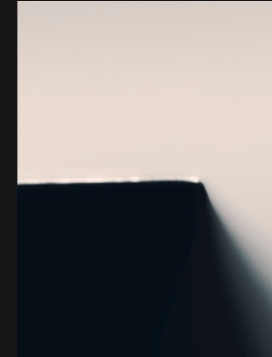

我們的理念 · 自 2001 年起
關於
關於
我們
每一種信仰傳統，皆是一個完整的意義宇宙。我們的使命，不在於消弭彼此的差異，而是照亮每一個傳統對人類追尋神聖之路的教示。
陳欣怡 博士
世界宗教博物館創館館長
世界宗教博物館於 2001 年創立，是一座超越黨派的文化機構，致力透過教育推動尊重、包容與理解。我們與全球各地的社群、學者及活態傳統守護者共同合作。

天光之際．館藏25+
創館年數
（2001 年成立）
（2001 年成立）
12
世界宗教
（當代信仰）
（當代信仰）
6,500
展覽平方公尺
（沉浸式空間）
（沉浸式空間）
4.2M+
年度訪客數
（2025 年度）
（2025 年度）
館務團隊
我們的
我們的
團隊
- 陳欣怡 博士創館館長暨策展人
- Prof. Ahmed Al-Rashid伊斯蘭館藏部主任
- Dr. Meera Kapoor南亞研究策展人
- Rev. Thomas Kuang公眾活動部主任
- Dr. Sarah Goldstein研究暨文物保存主任
- Kenji Watanabe數位體驗部主任
聯絡我們
館址與
館址與
聯絡資訊
- 館址
- 234 新北市永和區中山路 236 號
- 電話
- +886-2-8231-6118
- 一般諮詢
- info@mwr.org.tw
- 開放時間
- 查看完整時間表 →